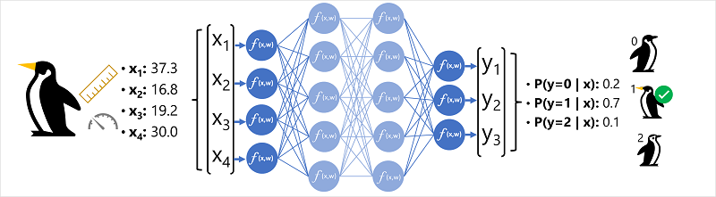
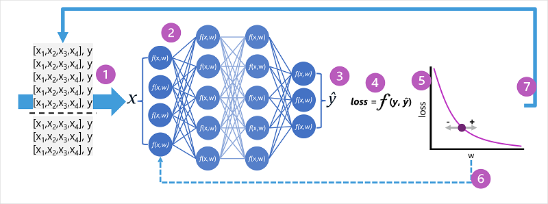

deep learning
Abstract
Deep learning is advanced form of machine learning that emulates the way the human brain learns. Creates an artificial neural network that simulates electrochemical activity in biological neurons by using mathematical functions.
Artificial Neural Networks (ANN)
Artificial neural networks consist of multiple layers of neurons. Each neuron is a function. This architecture of deeply-nested functions is where deep learning gets its name.
The models ANN’s produce are known as deep neural networks.
In an artificial neural network:
- Each neuron is a function that operates on an input value $x$ and a weight $w$.
- There are many layers of neurons.
- The activation function $f(x)$ is the outermost function and determines whether to pass the output to the next layer.
The algorithm that trains the model:
- Iteratively feeds the feature values ($x$) in the training data through the layers to calculate output values ($\hat{y}$).
- Validates the model to determine how far off the calculated $\hat{y}$ values are from known $y$ values.
- Modifies the weights ($w$) to reduce the loss (the model learns the weights that will result in the most accurate predictions).
Artificial Neural Network Example
Consider a classification model for penguin species:
- The feature data $x$ consists of:
- $x_1$ length of bill
- $x_2$ depth of bill
- $x_3$ length of flippers
- $x_4$ weight
- such that $x=[x_1,x_2,x_3,x_4]$
- The label $y$ is the species and is either Adelie, Gentoo or Chinstrap.
Like in all classification problems, the machine learning model must predict the most probable class to which an observation belongs.
So, $y$ is a vector of 3 probability values (one for each class): $[P(y=0|x), P(y=1|x), P(y=2|x)]$

The process for inferencing a predicted penguin class using this network:
- The feature vector for an observation (the input) is fed into the input layer of the neural network (one neuron for each $x$ value). a. In this example, the input is $x=[37.3, 16.8, 19.2, 30.0]$
- The functions of the first layer of neurons each calculate a weighted sum by combining the $x$ value with the weight $w$.
- The weighted sum is passed to an activation function.
- The activation function determines if the weighted sum meets the threshold to be passed to the next layer.
- This continues until the output layer is reached.
- The output layer produces a vector of values. In this case, a softmax function is used to create a probability distribution for the three possible classes of penguin. a. In this example, the output is $y=[0.2,0.7,0.1]$
- Each element of the output vector represents the probability of for respective class 0, 1 or 2. a. In this example, since the second value is highest, the model predicts that the species is 1 (Gentoo).
Training
During training, the model (the artificial neural network) learns the weights that will result in the most accurate predictions: 
- The training and validation datasets are defined.
- The neurons in each layer of the network apply their weights. These weights are initially assigned randomly.
- The output layer produces a vector containing the calculated values for $\hat{y}$
- A loss function is used. The predicted $\hat{y}$ values are compared with known $y$ values and the difference is aggregated into a loss value.
- An optimization functions uses differential calculus to evaluate the influence of each weight in the network on the loss and determine how it could be adjusted to reduce the overall loss. a. The specific optimization technique varies; usually, gradient descent is used.
- Changed weights are backpropagated to the layers in the network.
- The process is repeated over multiple iterations (epochs) until the loss is minimized and the model predicts acceptably accurately.
Compute
Rather than pass each case of the training data through the neural network one at a time, the data is batched into matrices and processed using linear algebra. This is why neural network training is best performed on systems with GPUs optimized for vector/matrix manipulation.